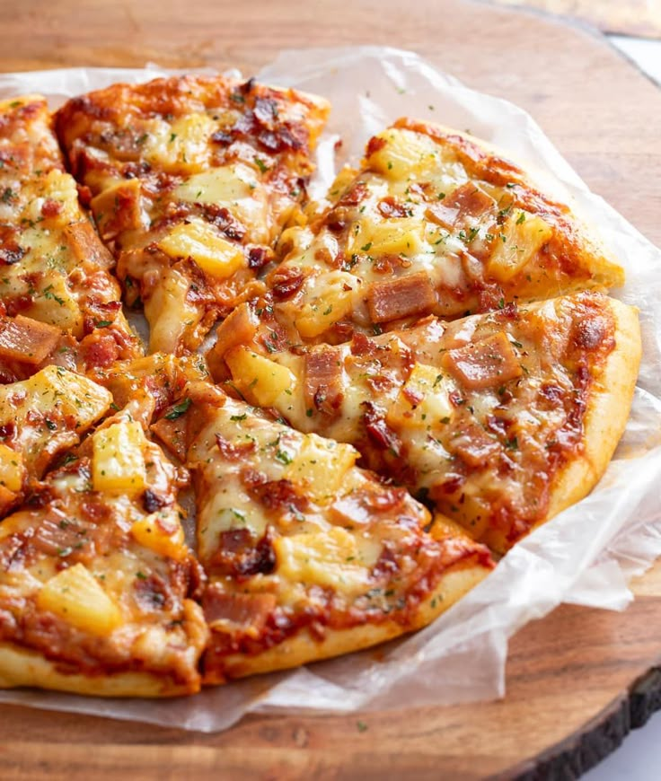

Pizza

Description
An all time fan favorite! Pizza today, Pizza tomorrow, Pizza all day everyday!
Though some may dissagree, pineapples give that extra oomph! that adds something different to our taste buds
Ingredients
- 1 tablespoon extra-virgin olive oil, plus more for pan
- 2 slices applewood-smoked bacon
- 4 canned pineapple rings
- 1 pound fresh pizza dough, at room temperature
- ½ cup pizza sauce
- 2 cups shredded mozzarella cheese
- ¼ cup thinly sliced red onion
- 4 slices Canadian bacon, cut into 1-inch triangles
Steps
- Preheat the oven to 500 degrees F (260 degrees C) with a rack in the lower position.>
- Oil a large rimmed baking sheet with olive oil.
- Meanwhile, heat a large skillet over medium heat. Add bacon and cook, flipping occasionally, until golden brown and crisp, 5 to 7 minutes.>
- Transfer to a paper towel-lined plate.
- Pour out pan drippings without wiping pan clean, and return skillet to heat
- Add pineapple, cook until lightly browned and caramelized, 3 minutes per side.
- Remove from pan. Chop bacon and cut pineapple rings into 3/4-inch pieces.
- On a lightly floured surface, roll dough to a 12-inch circle and place on the oiled baking sheet.
- Prick dough with a fork several times to reduce air bubbles.
- Spread pizza sauce evenly over dough, leaving a 1 1/2-inch border around edges
- Sprinkle with cheese, red onion, Canadian bacon, chopped pineapple, and chopped bacon.
- Bake in preheated oven until cheese is melted and bubbly, toppings are lightly charred, and crust is golden brown
- Let stand 5 minutes before serving.
Check out our other delicious recipes back home